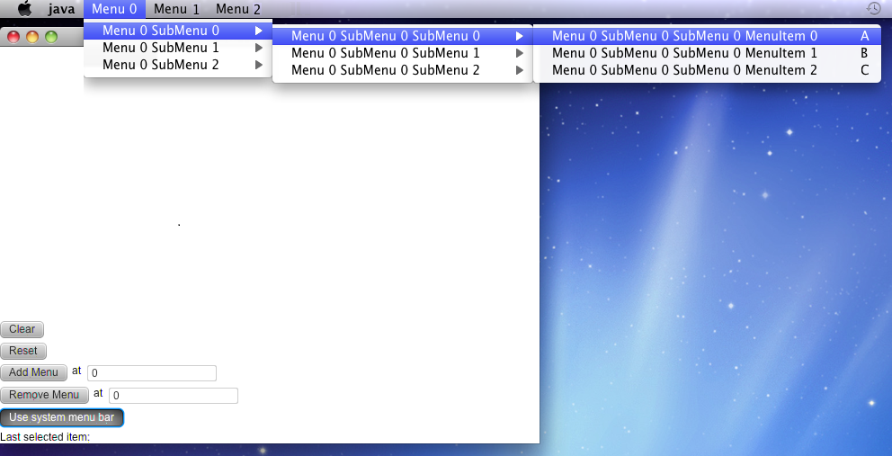

MenuBar Use System Menu Test
Notion: This test is targeted for testing System menu bar on MacOS.
It is implemented, by making standart JavaFX menuBar, switching
useSystemMenu option to true/false, to be a system menu bar (grey menu bar on the top of the screen).
On other platforms (like windows, and linux), this option shouldn't
affect anyhow, so just press "PASS".
This test verifies that MenuBar useSystemMenu property is working correctly for MacOS.
Test case 1
- Set useSystemMenu property to "true" by switching "Use system menu bar" toggle button on.
- Verify that MacOS application menu contains 3 items: "Menu 0", "Menu 1" and "Menu 2" with 3 levels of submenus.
- Verify that MenuBar at the left-top corner of test application is invisible.

Test case 2
- Set useSystemMenu property to "false" by switching "Use system menu bar" toggle button off.
- Verify that MenuBar and MacOS application menu return into initial state.
- Repeat Test case 1 and Test case 2 several times.

Test case 3
- Apply "-fx-use-system-menu-bar = true" CSS style by switching "Use system menu bar (using CSS)" toggle button on.
- Verify that MacOS application menu contains contains 3 items: "Menu 0", "Menu 1" and "Menu 2" with 3 levels of submenus as for Test case 1.
- Verify that MenuBar at the left-top corner of test application is invisible.
Test case 4
- Apply "-fx-use-system-menu-bar = false" by switching "Use system menu bar (using CSS)" toggle button off.
- Verify that MenuBar and MacOS application menu return into initial state.
- Repeat Test case 3 and Test case 4 several times.
Test case 5
- Set useSystemMenu property to "true" by switching "Use system menu bar" toggle button on.
- Verify that MacOS application menu contains contains 3 items: "Menu 0", "Menu 1" and "Menu 2" with 3 levels of submenus.
- Apply "-fx-use-system-menu-bar = false" by switching "Use system menu bar (using CSS)" toggle button off.
- Verify that MenuBar and MacOS application menu return into initial state.
- Apply "-fx-use-system-menu-bar = true" CSS style by switching "Use system menu bar (using CSS)" toggle button on.
- Verify that MacOS application menu contains contains 3 items: "Menu 0", "Menu 1" and "Menu 2" with 3 levels of submenus.
- Set useSystemMenu property to "false" by switching "Use system menu bar" toggle button off.
- Verify that MenuBar and MacOS application menu return into initial state.